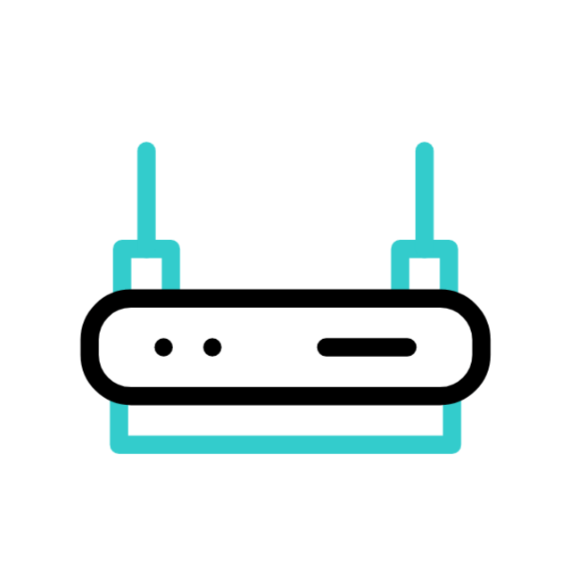
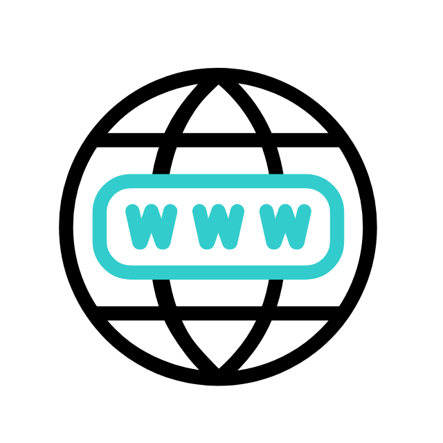
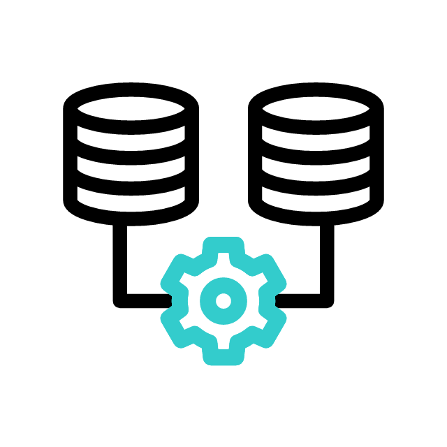

v1 · JavaFX - Prototipo verano
Prototipo de escritorio con 1 sola herramienta, el generador de correos. Solo funcionaba con .csv
TFG · CFGS DAW · Sergio Durán · 2026
Prototipo de escritorio con 1 sola herramienta, el generador de correos. Solo funcionaba con .csv
Posibilidad de añadir una base de datos con todos los apartamentos para el generador de correos y el sincronizador de contactos. Solo era necesario subir un .csv.
empresa_id.flowchart LR client["ACTORCliente"]:::external nginx[""]:::gateway web["
CONTENEDORNginx :80"]:::svc frontend["
CONTENEDOR/web · 11tyCONTENEDOR/frontend · Angular"]:::svc backend["CONTENEDOR/backend · Flask"]:::api db[""]:::db client -->|HTTP :80| nginx nginx -->|/| web web -->|respuesta| nginx nginx -->|/menu| frontend nginx -->|JSON| backend frontend -->|/api| backend backend -->|SQL| db db -->|resultados| backend backend -->|JSON| frontend classDef external fill:#ffffff,stroke:#111111,stroke-width:2.5px,color:#111111; classDef gateway fill:#ffffff,stroke:#c99613,stroke-width:2.5px,color:#111111; classDef svc fill:#ffffff,stroke:#4d4d4d,stroke-width:2.5px,color:#111111; classDef api fill:#ffffff,stroke:#2f5d7c,stroke-width:2.5px,color:#111111; classDef db fill:#ffffff,stroke:#386d4a,stroke-width:2.5px,color:#111111;
CONTENEDORPostgreSQL
/menuPanel privado: estado complejo, formularios densos, guards, signals.
Tipado fuerte y arquitectura mantenible.
/Landing, legales, blog, 404. Contenido casi 100 % estático.
Una SPA aquí sería peor SEO.
frontend/src/styles/.
@Injectable({ providedIn: 'root' })
export class ThemeService {
readonly theme = signal<Theme>(this._resolveInitial());
toggle(): void {
this.setTheme(this.theme() === 'dark' ? 'light' : 'dark');
}
private _apply(theme: Theme): void {
const root = document.documentElement;
root.classList.toggle('dark', theme === 'dark');
root.setAttribute('data-theme', theme);
}
}
Una sola clase .dark en <html> reescribe toda la UI vía CSS custom properties.
// El evento 'storage' SOLO se dispara en otras pestañas,
// nunca en la que hizo el setItem — exactamente lo que necesitamos
// para que la app espejo se entere del cambio sin entrar en bucle.
window.addEventListener('storage', (event: StorageEvent) => {
if (event.key !== STORAGE_KEY) return;
const next: Theme = event.newValue === 'dark' ? 'dark' : 'light';
if (next !== this.theme()) {
this.theme.set(next);
this._apply(next);
}
});
Este evento es necesario ya que permite la sincronización del tema entre tecnologías.
#EFE3BC.--background
--foreground
--card
--primary
--border
--accent
El toggle .dark reescribe los tokens; los componentes no se enteran.
empresa_id en todas las queries.
class ApartamentoCreateSchema(Schema):
nombre = fields.String(required=True, validate=validate.Length(min=1, max=200))
direccion = fields.String(load_default=None, validate=validate.Length(max=300))
ciudad = fields.String(load_default=None, validate=validate.Length(max=100))
@pre_load
def sanitize(self, data, **kwargs):
# Strip HTML ANTES de validar — nh3 mata cualquier tag
for field in ("nombre", "direccion", "ciudad"):
if field in data and isinstance(data[field], str):
data[field] = nh3.clean(data[field], tags=set()).strip()
return data
Sanitiza primero, valida después. El blueprint nunca toca un dict crudo del cliente.
Las API keys del PMS y del proveedor de IA viven en BD cifradas con clave maestra.
FERNET_KEY fuera del repo, en el entorno.
El mapa de calor y la sincronización Google trabajan con datos en RAM.
Cuando termina la petición, se evaporan. Cero PII persistida.
Todo con el fin de cumplir con el RGPD y LOPDGDD.
./nginxReverse proxy. Decide qué prefijo va a qué contenedor.
Aplica cabeceras de seguridad globales (CSP, HSTS, X-Frame-Options).
Sirve el dist/ de Angular y el _site/ de 11ty.
Resuelve el SPA-fallback y los trailing slashes de 11ty.
Externo reparte tráfico. Internos sirven archivos. Roles diferenciados, mismo binario.
add_header Content-Security-Policy "
default-src 'self';
script-src 'self' https://challenges.cloudflare.com
'sha256-Ig5A+5cewHBFUnM/P9kWkADehgoLk1wG8ReLwvNfLGQ='
'sha256-eJGI0Ik4oYe/PKLDOt4wcN76wYs8h+Ew05pMzdY6xG8=';
style-src 'self' https://fonts.googleapis.com 'unsafe-inline';
...
object-src 'none'; base-uri 'self'; form-action 'self';
" always;
# DNS resolver interno de Railway — TTL 1s
# evita IPs caducadas tras redeploys
resolver [fd12::10] ipv6=on valid=1s;
set $backend_url http://backend-sidekick.railway.internal:${BACKEND_PORT};
location /api/ {
proxy_pass $backend_url; # variable -> re-resolución por petición
...
}
TLS lo termina Railway en el edge — Nginx solo escucha en :80 dentro de la red privada IPv6.